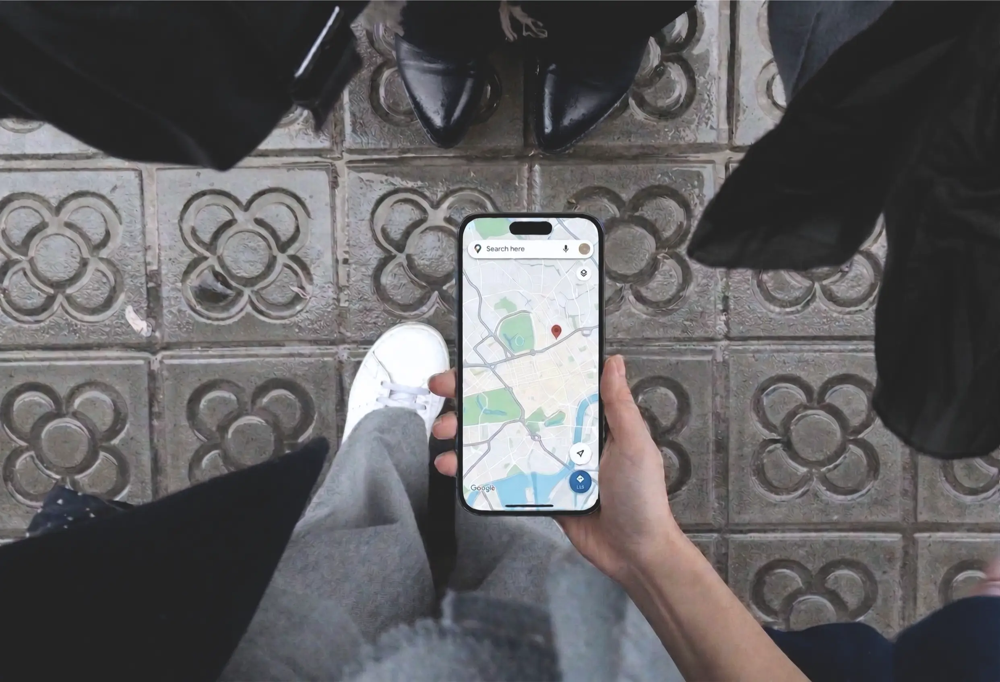

¿Qué es el SEO local y por qué tu negocio lo necesita?

Si tienes una tienda física o prestas servicios en una zona específica, necesitas aparecer en los primeros resultados de Google. Es así de simple. Hoy en día, el SEO local no es solo algo "que estaría bien tener"; es lo que mantiene vivo tu negocio. Es la forma de asegurarte de que la gente te encuentre exactamente cuando busca lo que ofreces cerca de su ubicación.
La realidad es que el 46% de todas las búsquedas en Google son locales. Si no estás optimizado, básicamente le estás regalando la mitad de tus clientes potenciales a la competencia.
¿Cómo te ayuda realmente el SEO local?
Piensa en ello como la versión digital del "boca a boca", pero mucho más rápido. A diferencia del SEO tradicional, que intenta llegar a todo el mundo, el SEO local se enfoca en tu ubicación. Te conecta con personas que están cerca y que tienen una intención de compra inmediata. Las ventajas de estar posicionado localmente:
- El “Local Pack”: Apareces en el mapa de Google antes que los resultados orgánicos normales.
- Tráfico de alta conversión: Atraes a personas que están literalmente a la vuelta de la esquina buscando tus servicios.
- Credibilidad inmediata: Las buenas reseñas construyen una reputación que el marketing tradicional no puede ofrecer.
Guía sencilla para mejorar el SEO local de tu negocio
Para ganar en esto, no basta con "estar en internet". Como consultora, siempre digo a mis clientes que se centren en estos tres pilares:
1. Optimización de tu Google Business Profile
A menudo, Google Business Profile es más importante que tu propia web. Mantenlo actualizado: elige la categoría correcta (¡sé específico!), usa fotos reales (reciben un 35% más de clics), usa palabras clave en tu descripción y destaca tus servicios.
2. La consistencia del NAP (Name, Address, Phone)
Google es como un detective, rastrea la red buscando inconsistencias. Si el nombre de tu negocio, dirección o teléfono (NAP) es distinto en tus redes sociales que en tu web, Google no confiará en ti. Mantén tu información idéntica en todas partes.
3. Una web rápida y adaptada al móvil:
La mayoría de las búsquedas locales se hacen desde el móvil mientras la gente se desplaza. Si tu web es lenta o difícil de leer en el móvil, Google te penalizará.
Tip Técnico: Asegúrate de que tu sitio sea seguro (HTTPS). Por muy buen contenido que tengas, un aviso de "Sitio no seguro" es la forma más rápida de perder a un cliente.
Preguntas frecuentes sobre SEO local
Basándome en las dudas más comunes que surgen al planificar una estrategia de visibilidad, aquí te respondo a las preguntas clave que todo dueño de negocio debe conocer:
¿Cuál es la diferencia entre SEO técnico y SEO local?
El SEO técnico trata sobre la "salud" de tu web (velocidad y código). Puedes medirla con herramientas como PageSpeed Insights de Google. El SEO local trata sobre tu presencia en el mundo real y en Google Maps. Ambos trabajan juntos para hacerte visible.
¿Vale la pena pagar a alguien por SEO?
Sinceramente, sí. El SEO es una inversión que trabaja para ti 24/7. Un especialista te ahorra dolores de cabeza técnicos y sabe qué herramientas funcionan realmente.
¿Cuánto tiempo tarda en verse resultados?
Dependiendo de la autoridad actual de tu dominio y de la competencia en tu zona. Normalmente, los cambios aparecen entre los 3 y 6 meses de trabajo constante.
Conclusión: Impulsa tu visibilidad hoy mismo
Dominar el SEO local es la forma más inteligente de hacer crecer tu negocio hoy en día. No se trata de llegar a todo el mundo, sino de llegar a las personas adecuadas en el momento preciso.
Si buscas servicios de SEO local profesionales o necesitas una web diseñada para convertir y posicionar desde el primer día, en CC Designs puedo ayudarte a que tu negocio sea el primero que vean tus clientes en Google.